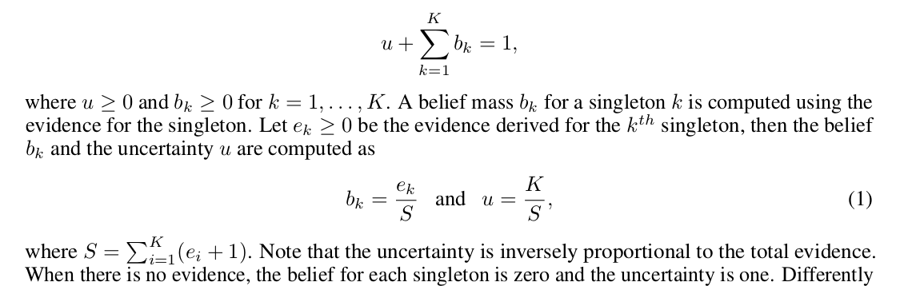
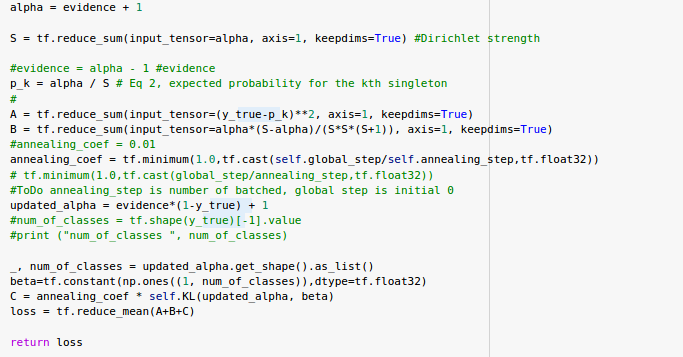
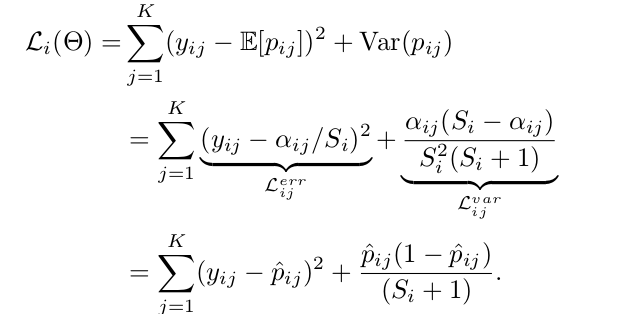
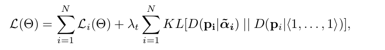
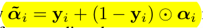

Evidential Deep Learning to Quantify Classification Uncertainty
Created Mittwoch 18 Dezember 2019
Contribution
Deep learning methods for classification with standard softmax output provide point estimates, the authors in the paper presents a method which provides a distribution for classification.
Deep learning models suffer from the problem of estimating/quantifying confidence as they are trained to minimize prediction loss and not prediction confidence.
The authors of the paper presents a methods of replacing the pointwise prediction of the neural network with a prior distribution (dirichlet).
Thus the deep learning model predicts directly the prior distribution. This is a different from the Bayesian neural net which models the uncertainity
in the model parameters which are used to determine the prediction uncertainty.
The major contributions according to authors are:
- Method for getting class probability distribution
- The estimated uncertainity based on the class probability is better than other estimation method because of the Bayes Risk loss function
- Can itself determine out of distribution
- Based on the uncertainty can determine adversial attack
According to me the added advantages are:
- Even though bayesian neural networks can determin uncertainity of netwrok they are currentlyy un deployable because of their massive computation
- On the contrary the proposed method can determine uncertainty with no additional computation and just making the network awars of the out of distribution in training(KL divergence in loss function) and learning it.
- Compared to other methods (dropout, ensemble etc )which require multiple forward pass to calculate the probability this method only requires 1 single forward pass.
Its very rare to see title with uncertainty "quantification" mostly the papers in the field name themselves as uncertainty "estimation" . The authors might have thought over the name; myself I agree on the title but will need some proof why its "quantification" and not estimation.
De
tailed Comments
- Softmax is the standard output of a classification problem.
- Softmax produces point estimate of the prediction, i.e. a value of a multinomial distribution.
- The idea is to replace softmax with relu, which is then interpreted as evidence for the output which is then converted to hyperparameter of a dirichlet distribution.
- So now the network doesnt learn the point but the hyperparameter of a distribution.
The process of learning hyperparmeter is
Quality:
- The paper is well written with first formulating softmax, showing its problems
- Then moving towards the concept of DS theory of evidence and explaining the subjective logic
- After which they explain the 3 loss function
- Finally experiments on the 2 problem of OOD and adversial attack comparison with other methods.
Subjective logic:
- Belief alone doesnt sum up to one but with uncertainty sum up to 1.
- Doubt : How did equation 1 come from the previous equation ? On substitution the asnwers are correct but how did they think ?
- Doubt: Isnt b_k also equal to p_k just a difference of 1, So dont know
- 
Loss function:
- With the Bayes risk loss function and the 3 proposition its prooved that the loss function will reduce for corect labels and increase for wrong labels.
- Adding the KL divergence with uniform distribution ensures that the evidence for wrong classfied is reduced to zero.
- With this parameter to the loss function the network learns the difference between evidence for a particular
- Reimplemented to code in Keras for testing and proper understanding as the code was not well documented.
 

Equation  in page 6 is the one which collects the evidence from the wrong labelled ones for comparing it with KL divergence with 1
Clarity:
- One of the best graphical explanation of a problem, explained the problem using 1 single graph to explain the impact of the work. Even though I didnt not understand the working of the paper first time, but I could understand the diagram and nunderstand completely what it meant to achieve.
- Paper is well written lucid easy to understand language. It addressed in Neurips so obviously you need to know many things to understand the technical terms the author is explaining.
Originality:
- As per me, never seen any such work. But who knows there are atleast 10,000 learning papers coming every year who can validate. If they got inspiration maybe.
- But its a ground breaking paper which needs to be explored in details
Significance:
- From my point of view this is highly significant paper as it places the prediction and the uncertainty right at the loss function which is the regulator of what the network should learn.
- By doing so it forces the same network to learn a distribution rather than a value which is super ingenious.
- Other methods for example Gal which reduces the probability but fails to do for the value or Dropout method in which you have to do multiple run.
- Both suffer from run time efficiency or optimizing the wrong values.
- Here both the accuracy and the confidence both are optimized together in 1 loss function.
6. Improvements:
- One of the issues which looks evident is its scalalbility to regression tasks. Since the methodology is rooted in subjective logic we need to rething about the problem.
- One Probable solution is to map the regression problem as Gaussian distribution with prior as gausian (for mu) ans wishart (for sigma2). Then the model will estimate the mu and evidence by sigma modeled as wishart
- But need to check if all the 3 propositions are satisfies
7. Whether or not code was submitted, and if so, if it influenced your review?
The code was submitted, which was very useful in understanding the code. Without the code just with the equations it wouldnt have been able to do understand the code at all
- ===== To Do for me =====
- Plot the decision boundary using the toy dataset like here [](https://scikit-learn.org/stable/auto_examples/classification/plot_classifier_comparison.html
- Plotting the loss landscape. Is there any use ?
- Convert for regression problem